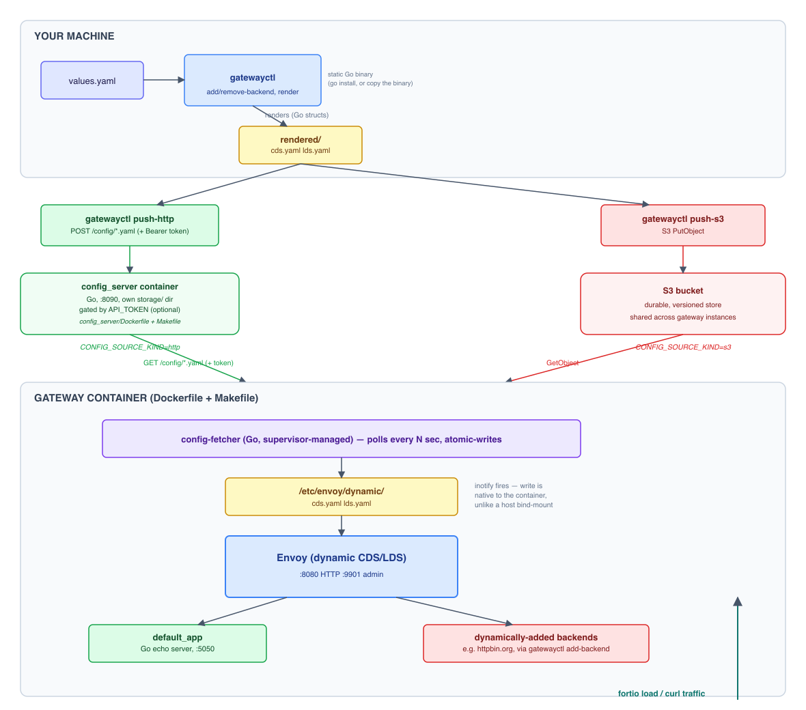

envoy-perf-gateway
Envoy as a front door for perf and chaos testing. Add and remove backends through a CLI, and toggle fault injection at runtime, with no restarts and no full xDS control plane.
Per-backend fault isolation
Inject aborts and delays into a single backend without affecting any other route.
Live toggling, zero restarts
Fault injection distributes like a backend change — no redeploy — and converges across every gateway replica.
No xDS control plane
Backends, routes, and fault injection all update dynamically via filesystem-based CDS/LDS/runtime and inotify hot-reload.
One CLI for the workflow
gatewayctl adds/removes backends, pushes config, and drives fault injection — no hand-edited YAML.
Pluggable config source
Distribute configuration over HTTP (the bundled config server) or directly to S3.
Ready to run
Pre-built Docker images and CLI binaries are published with every release.
Quickstart
Uses the published Docker images and a pre-built gatewayctl binary — nothing to build.
1 Start the gateway
In its own terminal. This works even if the config server isn't up yet — it serves a built-in default configuration meanwhile.
# pulls the published image and runs it, pointed at a local config server
docker pull jecklgamis/envoy-perf-gateway:latest
docker rm -f envoy-perf-gateway 2>/dev/null
docker run --name envoy-perf-gateway -p 8080:8080 -p 9901:9901 \
-e CONFIG_SOURCE_KIND=http \
-e CONFIG_SOURCE_URL=http://host.docker.internal:8090 \
-e CONFIG_API_TOKEN=default \
jecklgamis/envoy-perf-gateway:latest2 Start the config server
In a separate terminal.
docker pull jecklgamis/envoy-perf-gateway-config-server:latest
docker rm -f envoy-perf-gateway-config-server 2>/dev/null
docker run --name envoy-perf-gateway-config-server -p 8090:8090 \
-e API_TOKEN=default \
jecklgamis/envoy-perf-gateway-config-server:latest3 Get gatewayctl
Download a pre-built binary for your platform from the releases page, or install it with Go.
# pick your platform
curl -L -o gatewayctl https://github.com/jecklgamis/envoy-perf-gateway/releases/latest/download/gatewayctl-darwin-arm64
chmod +x gatewayctl
# or
go install github.com/jecklgamis/envoy-perf-gateway/gatewayctl@latestOther platforms: gatewayctl-darwin-amd64, gatewayctl-linux-amd64, gatewayctl-linux-arm64.
4 Point the CLI at the config server
Saved to ~/.config/gatewayctl/config.yaml, so add-backend/remove-backend/fault push automatically from here on.
./gatewayctl config set mode http
./gatewayctl config set http.server-url http://localhost:8090
./gatewayctl config set http.api-token defaultgatewayctl config get (no key) and the confirmation line above both mask the token as ******** - it's the kind of output that ends up pasted into a chat or a screenshot. To see the real value, ask for it by name: gatewayctl config get http.api-token.5 Add a backend
No gateway restart required.
./gatewayctl add-backend --name httpbin --host httpbin.org --port 443 --tls --route-prefix /httpbin/
curl http://localhost:8080/httpbin/get6 Try fault injection
Scoped to just the httpbin backend. This pushes through the config pipeline like a backend change, so allow up to CONFIG_POLL_INTERVAL_SECONDS (15s by default) for the gateway to pick it up.
./gatewayctl fault abort --target httpbin --percent 100 --status 503
curl http://localhost:8080/httpbin/get # returns 503 within ~15s
curl http://localhost:8080/ # unaffected - still default_app
./gatewayctl fault delay --target httpbin --percent 100 --duration-ms 2000
curl http://localhost:8080/httpbin/get # now takes ~2s
./gatewayctl fault reset --target httpbin
curl http://localhost:8080/httpbin/get # back to normalInstalling the CLI
gatewayctl is a self-contained, statically-linked Go binary — no runtime dependency. Two ways to get it:
- Download a pre-built binary from the releases page for your platform.
- Install with Go:
go install github.com/jecklgamis/envoy-perf-gateway/gatewayctl@latest
Managing Backends
gatewayctl list-backends and gatewayctl remove-backend --name <name> round out add-backend:
gatewayctl list-backends
# httpbin httpbin.org:443 tls /httpbin/
# svc-a svc-a.internal:8080 plaintext frontend-a.test.local
gatewayctl remove-backend --name httpbinlist-backends prints the name, upstream host:port, TLS mode, and resolved route for each backend (or (no route, cluster only) if none is configured). remove-backend removes the backend's cluster and route, then pushes the updated configuration, the same way add-backend does.
--name) are restricted to letters, digits, -, and _. This isn't arbitrary — the name becomes part of an Envoy runtime key that gets turned into a filesystem path on the gateway, so it's validated up front. Numeric flags are validated too, before anything is saved or pushed: --port must be 1-65535, --percent (fault commands) must be 0-100, --status must be a real HTTP status code (100-599), --duration-ms can't be negative, and --connect-timeout/--timeout must be a valid, positive duration string (e.g. 500ms, 5s).add-backend refuses to run if local values.yaml doesn't exist yet but a mode is configured, unless you pass --force. This guards the wrong-directory/wrong-machine trap: a missing file looks identical to a legitimate first backend, but pushing it would silently overwrite a remote config that already has other backends on it with just this one. Run gatewayctl list-backends --remote first to check what's actually live, or pass --force if it's genuinely a fresh deployment. remove-backend doesn't need this - it always fails safely on a missing file, since "no backend named X" is caught before anything is ever saved or pushed.Checking the ground truth
list-backends only ever reads local values.yaml by default — it never talks to the network. If a push failed silently, or you're running gatewayctl from a different machine or directory than whoever last pushed, local values.yaml can drift from what's actually live. Add --remote to fetch the config server's (or S3's) current cds.yaml/lds.yaml and print the same table, reconstructed from what's actually live instead of local state:
gatewayctl list-backends --remote
# httpbin httpbin.org:443 tls /httpbin/
# serverprobes www.serverprobes.com:443 tls /serverprobes/For the raw underlying files instead of the summarized table, gatewayctl fetch downloads cds.yaml, lds.yaml, and runtime.yaml - the same files the in-container fetcher polls - into --rendered-dir:
gatewayctl fetch
# Fetched cds.yaml -> rendered/cds.yaml (3098 bytes)
# Fetched lds.yaml -> rendered/lds.yaml (7802 bytes)
# Fetched runtime.yaml -> rendered/runtime.yaml (3 bytes)
cat rendered/cds.yaml # every live cluster, straight from the sourceBoth use whichever mode is configured (gatewayctl config set mode http|s3, or CONFIG_SOURCE_KIND), the same way push-http/push-s3 do. A file that's never been pushed is skipped with a message rather than treated as an error.
Rebuilding values.yaml from what's live
gatewayctl generate-values goes a step further than --remote or fetch: instead of a display table or raw files, it reconstructs an actual values.yaml - the same file add-backend/fault read and write - from what's currently live. Every field (host, port, tls, domain, route-prefix, host-header, timeouts, faults) is recoverable from cds.yaml/lds.yaml/runtime.yaml, the same way kubectl get -o yaml exports a live object's manifest:
gatewayctl generate-values
# Wrote config/values.yaml: 3 backend(s), 1 fault override(s)Use this to sync local state before making further changes - the same shape as git pull before git push - instead of trusting whatever's already sitting in local values.yaml, which may be stale or may not even be the copy that was last used to push. It refuses to overwrite an existing values.yaml unless you pass --force, since that would discard any local-only changes not yet pushed.
--timeout is a route-level Envoy property, so a backend registered with no route at all (--domain/--route-prefix both omitted) never persists that value anywhere - it comes back as the CLI's own default (15s) rather than whatever it actually was. Every other field is exact.Routing
Path Based Routing
--route-prefix routes requests under that path prefix to the backend, rewritten to / on the upstream:
gatewayctl add-backend --name httpbin --host httpbin.org --port 443 --tls --route-prefix /httpbin/
curl http://localhost:8080/httpbin/getThis flag is optional; omitting it registers the cluster without a route. Unmatched requests fall through to default_app, the bundled echo server on port 5050.
Virtual Host Routing
--domain gives a backend its own Envoy virtual host, matched on the Host header, instead of or in addition to a path prefix:
gatewayctl add-backend \
--name svc-a --host svc-a.internal --port 8080 \
--domain frontend-a.test.local
gatewayctl add-backend \
--name svc-b --host svc-b.internal --port 8080 \
--domain frontend-b.test.local --route-prefix /api/
curl -H "Host: frontend-a.test.local" http://localhost:8080/
curl -H "Host: frontend-b.test.local" http://localhost:8080/api/anything--domain alone routes all traffic under that Host header to the backend. Combined with --route-prefix, only that path prefix under the domain is routed. If neither flag is set, the backend still registers a cluster without a route.
Host Header Rewriting
--host-header overrides the Host header sent to the upstream. This matters for any backend - Cloudflare-fronted ones especially - that rejects a request whose Host header doesn't match the TLS SNI/cert:
gatewayctl add-backend --name serverprobes --host www.serverprobes.com --port 443 --tls \
--route-prefix /serverprobes/ --host-header www.serverprobes.com--host (and TLS SNI) control where and how Envoy connects to the upstream; --host-header controls what the upstream actually sees in the request itself. Without it, the upstream receives the gateway's own inbound Host header unchanged - fine for a backend like httpbin.org that doesn't validate it, but rejected outright (421 Misdirected Request) by anything that does.HTTP/2 Upstreams (gRPC)
--http2 makes Envoy speak HTTP/2 to a backend's upstream connection. Without it, Envoy defaults every cluster to HTTP/1.1 upstream regardless of what the listener or client negotiated - gRPC needs HTTP/2 end to end, so a gRPC backend needs this flag to work at all:
gatewayctl add-backend --name grpc-svc --host grpc.internal --port 50051 --tls --http2 \
--domain grpc.test.local--domain, not --route-prefix, for a gRPC backend - path rewriting breaks gRPC's fixed /package.Service/Method paths. If --tls is also set, ALPN advertises h2 during the handshake. If this gateway is deployed behind an Ingress (the Helm charts), that hop also needs its own HTTP/2 or gRPC backend-protocol annotation - --http2 only covers gatewayctl's own upstream connection, not the Ingress-to-pod hop in front of it.Response Compression
--compression gzip turns on gzip response compression for one backend's route. It's off by default and opt-in per backend, not gateway-wide - this is a perf-testing tool, and compression changes latency/CPU characteristics that would otherwise silently affect a load test nobody asked to have compressed:
gatewayctl add-backend --name api --host api.internal --port 8080 --route-prefix /api/ --compression gzip
curl -H "Accept-Encoding: gzip" http://localhost:8080/api/... # content-encoding: gzip
curl http://localhost:8080/ # unaffected - compression wasn't requested for this routeCompression only applies to responses whose Content-Type is text/JSON-ish (application/json, text/html, text/css, etc.) and above a minimum size - compressing tiny or already-binary/compressed payloads (images, video) just wastes CPU. It also still respects the client's own Accept-Encoding header; a client that doesn't advertise gzip support never gets a compressed response regardless of this flag.
Path Prefix vs. Virtual Host: which to use
The right choice isn't really "API vs. frontend" - it's whether the backend assumes it owns the whole path space at its own origin.
Use --route-prefix for backends whose responses are self-contained - a JSON API is the classic case. Nothing in the response implies a follow-up request to some other absolute path on the same origin, so proxying it under a prefix (/httpbin/get → httpbin.org/get) works cleanly.
Use --domain for anything built assuming it's served at its origin's root - most real frontends. Bundlers emit absolute asset paths (/assets/index.js), and pages reference them the same way regardless of what prefix you proxied the HTML through:
# this only rewrites the top-level HTML request - the page's own
# /assets/*.js and /assets/*.css requests miss the prefix entirely and
# fall through to default_app instead of the real files
gatewayctl add-backend --name some-spa --host some-spa.example.com --port 443 --tls \
--route-prefix /some-spa/ --host-header some-spa.example.com
curl https://your-gateway/some-spa/ # 200, real HTML
curl https://your-gateway/assets/index.js # hits default_app, not the real JSWith --domain instead, the app sees requests exactly as if it owned the whole domain, so its absolute paths resolve correctly with no rewriting needed. The tradeoff: you need a dedicated hostname pointed at the gateway per app (and, behind an Ingress like this project's Helm charts use, that hostname needs its own DNS record and TLS cert, since TLS terminates at the Ingress rather than at Envoy itself).
fetch/XHR calls to the backend's other origins (e.g. a separate API or CDN subdomain) will be blocked by the browser's CORS policy, since those origins won't have allowlisted your gateway's domain - the browser sees the page's origin as your gateway, not the real site. Cookies scoped to the original domain also won't be sent, since the domain the browser sees no longer matches, breaking anything that depends on existing session/auth state.Timeouts
--connect-timeout and --timeout control how long Envoy waits on the upstream connection and on the overall request, respectively:
gatewayctl add-backend --name slow-svc --host slow-svc.internal --port 8080 \
--route-prefix /slow/ --connect-timeout 2s --timeout 30s--connect-timeout sets the cluster's connect timeout and defaults to 5s. --timeout sets the route's request timeout and defaults to 15s. Both accept Envoy duration strings (e.g. 500ms, 2s).
Fault Injection
Each route, including the default_app fallback, has its own independently toggleable fault injection, isolated by a unique Envoy runtime key per --target. Faulting one backend does not affect any other's traffic:
# 30% of backend-1's requests return 503 - backend-2, default_app, etc. are unaffected
gatewayctl fault abort --target backend-1 --percent 30 --status 503
# 20% of backend-1's requests are delayed by 2s
gatewayctl fault delay --target backend-1 --percent 20 --duration-ms 2000
# reset backend-1 to baseline
gatewayctl fault reset --target backend-1
# target the default_app fallback route instead
gatewayctl fault abort --target default_app --percent 100 --status 503--target is the backend's --name value, or default_app for the fallback route.
How it's distributed
Fault state is written to values.yaml (a faults entry per target) and distributed the same way as backends: rendered into rendered/runtime.yaml and pushed through config_server/S3, the same as cds.yaml/lds.yaml. Envoy picks it up via its layered_runtime disk layer, so every gateway replica converges on the same fault state, and it survives restarts — unlike a one-off admin API call, which only ever reached whichever single pod received it.
CONFIG_POLL_INTERVAL_SECONDS, 15s by default), not instantly on the next request. For a sub-second, single-pod override, you can still curl -X POST http://<admin-host>:9901/runtime_modify?<key>=<value> directly against one pod's admin API — it's in-memory only and reverts on that pod's next restart.Perf Testing
Point a load generator at http://localhost:8080/ (or a routed backend path) while toggling fault injection to observe how client-side retry, timeout, and circuit-breaker behavior holds up under a degraded upstream.
k6
Scriptable, with pass/fail thresholds and detailed reporting.
cat <<'EOF' > script.js
import http from 'k6/http';
import { check } from 'k6';
export const options = {
vus: 50,
duration: '30s',
thresholds: {
http_req_duration: ['p(95)<500'],
http_req_failed: ['rate<0.01'],
},
};
export default function () {
const res = http.get('http://localhost:8080/httpbin/get');
check(res, { 'status is 200': (r) => r.status === 200 });
}
EOF
k6 run script.jsoha
Single binary, no script needed — handy for a quick smoke test.
oha -z 30s -c 50 http://localhost:8080/httpbin/getfortio
Another good option, especially if you also want a built-in web UI for live results.
fortio load -qps 100 -t 30s http://localhost:8080/httpbin/getRunning From Source
HTTP source
Each command runs in the foreground — use a separate terminal for each.
# terminal 1
make -C config_server up
# terminal 2
make upS3 source
make -C gatewayctl install
make all
export CONFIG_S3_BUCKET=my-bucket CONFIG_S3_PREFIX=envoy-perf-gateway/
make run-s3 # needs AWS credentials in your shell env (AWS_ACCESS_KEY_ID etc.)Configure the CLI once (gatewayctl config set mode s3, s3.bucket, s3.prefix) so add-backend/remove-backend push to S3 automatically. API_TOKEN/CONFIG_API_TOKEN both default to default if unset — fine on localhost, export a real value for anything beyond that.
Building
make all # gateway image
make -C config_server image # config server image
make -C gatewayctl install # install gatewayctl to $PATH
make build-gatewayctl-all # cross-compile all platforms to gatewayctl/dist/Kubernetes (Helm)
Two independent charts under charts/: the gateway, and config_server, matching the fact that config_server can run entirely standalone.
1. Install the config server
cd charts/envoy-perf-gateway-config-server
helm install my-config-server . --set apiToken=defaultIts NOTES.txt output gives the in-cluster Service address to hand to the gateway.
2. Install the gateway, pointed at it
cd charts/envoy-perf-gateway
helm install my-gateway . \
--set gateway.configApiToken=default \
--set gateway.configSourceUrl=http://my-config-server:8090Or with S3 mode, skipping the config server chart entirely:
helm install my-gateway . \
--set gateway.configSourceKind=s3 \
--set gateway.s3.bucket=my-bucket| Key | Description |
|---|---|
gateway.configSourceKind | http or s3 |
gateway.replicaCount | Gateway pod count. Fault injection and backends both converge across all replicas via the config pipeline. |
gateway.configSourceUrl | Required in http mode — the config server's address. |
gateway.configApiToken | Required in http mode; must match the config server's token. Prefer configApiTokenExistingSecret beyond local/dev use. |
gateway.s3.bucket | Required in s3 mode. |
ingress.enabled | Off by default. Both charts ship an nginx + cert-manager Ingress template, disabled unless you opt in. |
:9901) is exposed on its Service for convenience, but a direct POST /runtime_modify against it only affects one pod and doesn't survive a restart — use gatewayctl fault for anything that should apply across gateway.replicaCount replicas.Architecture
Clusters (CDS), listeners (LDS), and fault-injection runtime state are not static in config/envoy.yaml. The bootstrap only points Envoy at a directory it watches via inotify — there is no xDS control plane, no gRPC streams, no cluster bootstrap ceremony.

gatewayctl on the host only ever writes to values.yaml and the local rendered/ directory — it never touches the gateway container's filesystem directly. A fetcher binary running inside that container polls the config server or S3 and writes changes into /etc/envoy/dynamic itself, which is what actually triggers Envoy's inotify-based hot-reload.
See the full architecture doc for the diagram's details, the HTTP/S3 distribution split, and how fault injection's layered_runtime disk layer works.
Troubleshooting
docker run fails with "Conflict. The container name ... is already in use"
A container with that name already exists from a previous run - docker run --name requires unique names. Either reuse it or remove it first:
# remove the old container, then re-run the original docker run command
docker rm -f envoy-perf-gateway
# or just start the existing one instead
docker start envoy-perf-gatewayThe Quickstart's own commands now do this docker rm -f for you before each docker run, so copy-pasting the same block twice just works. You'll still hit this if you type a bare docker run yourself, or use make run/make up (see Running From Source) alongside a container already started from the Quickstart.
"No admin layer specified" on fault commands
Requires the layered_runtime.admin layer in config/envoy.yaml. Without it, Envoy's /runtime_modify refuses with 503 No admin layer specified.
Fetcher logs 404 Not Found for runtime.yaml
Benign — it just means nothing's been pushed to the config server yet (no backend or fault has ever been added). It resolves itself the moment any gatewayctl command that pushes config runs once.
A fault change doesn't seem to apply
Allow up to CONFIG_POLL_INTERVAL_SECONDS (15s by default) for the fetcher's next poll. Check the running gateway's fault state directly against its admin API: curl http://<admin-host>:9901/runtime — the entries field shows exactly what Envoy currently sees.
Scaling gateway.replicaCount and fault injection
add-backend/remove-backend scale fine — every replica's fetcher independently converges on the same config. gatewayctl fault also scales correctly as of the current design (it distributes through the same pipeline). A direct admin-API POST /runtime_modify, however, only ever reaches one pod — don't rely on it for anything that needs to apply cluster-wide.
Contributing & License
Found a bug, have a feature request, or want to submit a fix? Open an issue or a pull request.
Licensed under the Apache License 2.0.